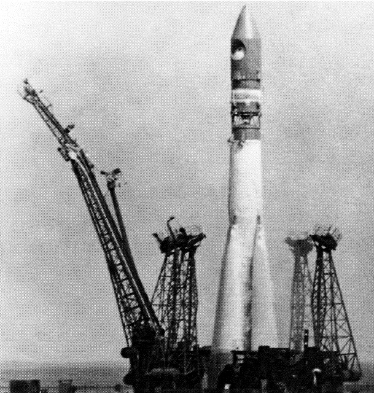
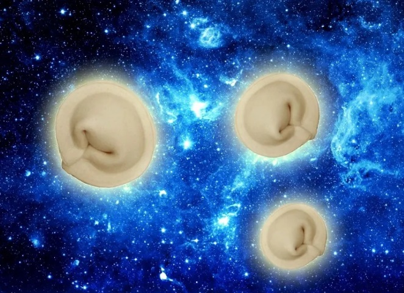

Изучение космоса началось еще с самых древних времен, когда человек только учился считать по звездам, выделяя созвездия. И только всего четыреста лет назад, после изобретения телескопа, астрономия начала стремительно развиваться принося в науку все новые открытия.
XVII век стал переходным веком для астрономии, тогда начали применять научный метод в исследовании космоса, благодаря которому был открыт Млечный путь, другие звездные скопления и туманности. А с созданием спектроскопа, который способен разложить через призму свет, излучаемый небесным объектом, ученые научились измерять данные небесных тел, такие, как температура, химический состав, масса и другие измерения.
Начиная с конца XIX века астрономия вступила в фазу многочисленных открытий и достижений, главным прорывом науки в XX веке стало запуск первого спутника в космос, первый полет человека в космос, выход в открытое космическое пространство, высадка на луне и космические миссии к планетам Солнечной системы. Изобретения сверхмощных квантовых компьютеров в XIX веке также обещают многие новые изучения, как уже известных планет и звезд, так и открытия новых далеких уголков вселенной.

После запуска на орбиту советского искусственного спутника в 1957 году было положено начало великой задачи покорения космоса. Пробные запуски, когда в спутники помещались различные живые организмы, такие как бактерии и грибки, позволили усовершенствовать космические корабли. А полеты в космос знаменитых Белки и Стрелки привели к стабилизации обратного спуска. Все шло к подготовке знаменательного события – отправки человека в космос.

В 1961 году (12 апреля) «Восток» унес на орбиту первого в истории космонавта – Юрия Гагарина. Пилот по каналам связи через несколько минут вращения сообщил, что все процессы в норме. Полет длился 108 минут, за это время Гагарин принимал сообщения с Земли, вел радиорепортаж и бортжурнал, контролировал показания бортовых систем, осуществлял ручное управление (первые пробные попытки).
Аппарат с космонавтом приземлился недалеко от Саратова, причиной посадки в незапланированном месте стали неполадки в процессе разделения отсеков и отказ тормозной системы. Вся страна, замерев перед телевизорами, следила за этим полетом.

В июне 1963 года «Восток-6» совершил старт с шестым советским космонавтом – Валентиной Терешковой. В это же время находился на орбите и «Восток-5», управляемый Валерием Быковским. Терешкова в общей сложности провела на орбите около 3-х суток, за это время корабль сделал 48 оборотов. За время пролета Валентина тщательно фиксировала все наблюдения в бортовом журнале, а с помощью сделанных ею фотографий горизонта ученые смогли обнаружить в атмосфере аэрозольные слои.
18 марта 1965 года стартовал «Восход-2» с новым экипажем на борту, одним из членов которого стал Алексей Леонов. Космический корабль был оснащен камерой для вывода космонавта в открытое пространство. Специально разработанный скафандр, укрепленный многослойной герметичной оболочкой, позволил Леонову выйти из камеры шлюза на всю длину фала (5,35 м). За всеми операциями с помощью телекамеры следил Павел Беляев – другой член экипажа «Восхода-2». Эти знаменательные события навсегда вошли в историю развития советской космонавтики, являясь венцом развития науки и техники того времени.

1. В сентябре 1967 года Международная федерация астронавтики провозгласила 4 октября Днем начала космической эры человечества.
2. Анализ сигналов, полученных с ПС-1, позволил специалистам изучить верхние слои ионосферы и получить сведения об условиях работы аппаратуры, которые оказались очень полезными для запуска других спутников.
3. У Валентины Терешковой было две дублерши. Обычно у каждого космонавта есть один дублер, но в случае с полетом в космос первой женщины, было назначено сразу двое запасных – Ирина Соловьева и Валентина Пономарева. Руководство обосновывало такую необходимость особенностями женского организма.
4. Родным Валентины Терешковой сообщили о ее полете только после его успешного завершения. Информация тщательно скрывалась, поскольку полет мог закончиться трагедией. Терешкова сообщила родственникам, что едет на соревнования, а о случившемся те узнали по радио.
5. Терешкова очень хотела продолжать космические полеты, и даже была готова отправиться на Марс без возможности вернуться назад.
6. Скафандр Алексея Леонова весил почти 100 кг. Скафандр «Беркут» для первого выхода человека в космос разработали на Научно-производственном предприятии «Звезда», которое сейчас входит в холдинг «Технодинамика».
Интерактивные задания